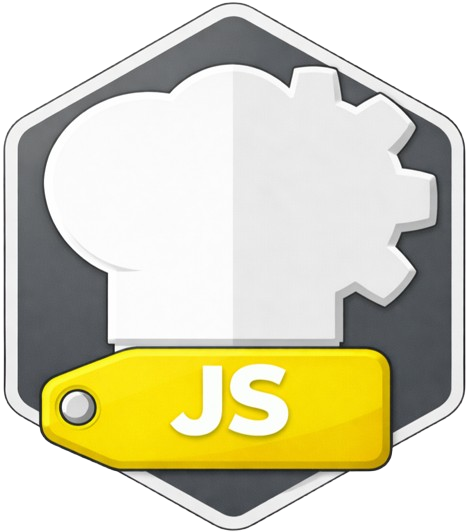

PROJECT

ZZX-LABS R&D // CYBERCHEFKIT
CyberChefJS
JavaScript/Node implementation supporting browser and backend transform pipelines, with real browser reference execution, ESM/CommonJS generation, Node CLI scaffolding, package/webpack configuration, test vectors, and browser/backend adapter examples.
JAVASCRIPT // NODE + BROWSER
CyberChefJS Workbench
BROWSER: LIVEESM / CJSNODE CLIWEBPACK CONFIG
The browser edition directly executes the same JavaScript transform semantics used for the generated module examples.
DUAL RUNTIME
Browser and backend pipelines
Generated artifacts support direct imports, CLI use, and webpack browser bundles while preserving deterministic vectors.